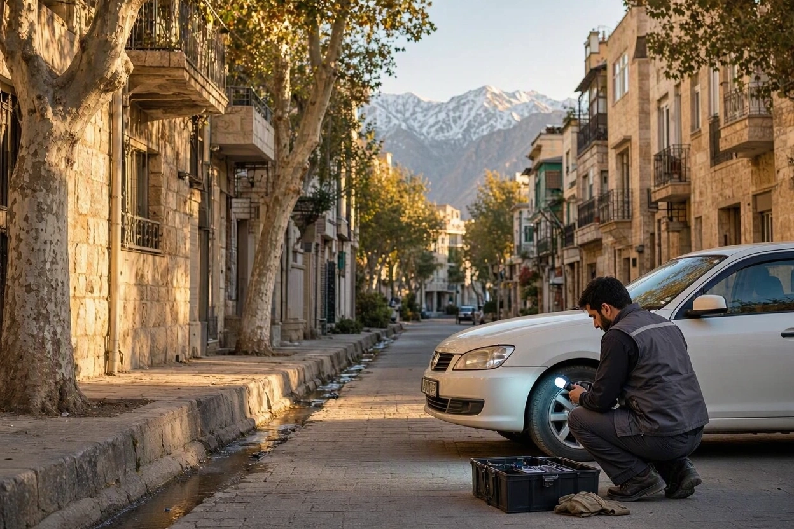
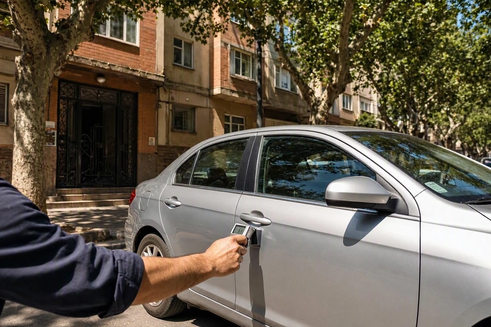
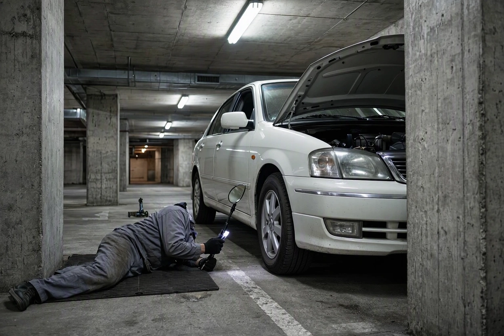
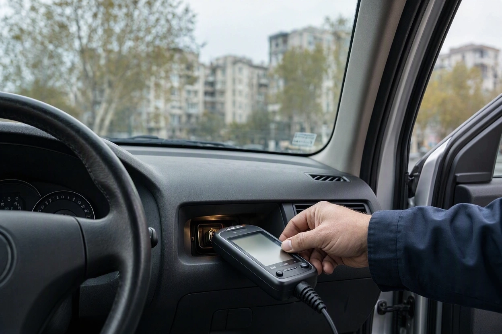
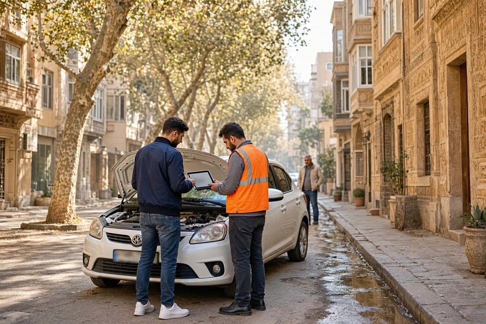
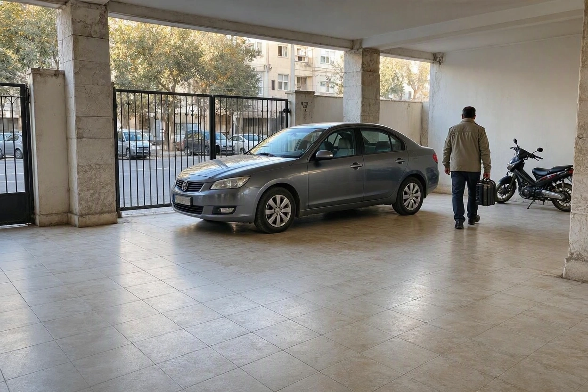

کارشناسی خودرو در محل دقیق است؟ ۵ محدودیت واقعی و راه حل آن ها
ساعت شش عصر است. تارای مورد نظرتان در کوچهای باریک، زیر سایهی درخت و چسبیده به دیوار پارک شده. فروشنده میگوید «همین الان از سر کار رسیدم» و موتور هنوز داغ است. کارشناس هم رسیده و قرار است تا نیم ساعت دیگر نظرش را بگوید. سؤالی که در ذهن خیلی از خریدارها میچرخد همین است: نتیجهی بررسی در این شرایط واقعاً قابل اعتماد است؟
جواب کوتاه این است که کارشناسی خودرو در محل ابزار دقیقی است، اما دقتش به شرایط بررسی گره خورده است. ما در کارماچک هر روز خودروها را در کوچه، پارکینگ و نمایشگاه بررسی میکنیم و میدانیم کجای این روش محکم است و کجا نیاز به تدبیر دارد. در این راهنما پنج محدودیت واقعی را بدون تعارف میگوییم و برای هر کدام راهحلی میدهیم که خودتان بتوانید اجرا کنید.
بله، کارشناسی خودرو در محل برای رنگ، بدنه، شاسی، دیاگ و وضعیت کلی فنی دقت قابل اتکایی دارد، به شرطی که نور کافی، زمان کافی و موتور سرد فراهم باشد. محدودیت اصلی آن در بخشهایی است که به بالابر، باز کردن قطعه یا رانندگی طولانی نیاز دارند. با هماهنگی درست پیش از بازدید، بیشتر این محدودیتها کم یا برطرف میشود.
خلاصه در یک دقیقه
- دقت کارشناسی در محل بیشتر از ابزار، به نور، زمان، سرد بودن موتور و استقلال کارشناس بستگی دارد.
- زیر خودرو بدون بالابر کامل دیده نمیشود؛ اگر کارشناس نشانهی مشکوک ببیند، یک بازدید کوتاه در تعمیرگاه راهحل منطقی است.
- موتوری که پیش از رسیدن کارشناس روشن شده، بخشی از ایرادهای استارت سرد را پنهان میکند. از فروشنده بخواهید خودرو را روشن نکند.
- بعضی ایرادها در یک جلسهی نیمساعته بروز نمیکنند و هیچ کارشناسی، چه در محل چه در مرکز، نمیتواند همهی آنها را قطعی تشخیص دهد.
- گزارش کتبی که موارد بررسینشده را صریح بنویسد، معیار خوبی برای سنجیدن دقت کارشناس است.
دقت کارشناسی در محل به چه چیزی بستگی دارد؟
دقت کارشناسی یعنی اینکه گزارش، وضعیت واقعی همان بخشهایی را که بررسی شده درست نشان دهد و دربارهی بخشهایی که بررسی نشده ادعایی نکند. با این تعریف، سؤال «دقیق است یا نه» به سه سؤال کوچکتر تبدیل میشود: کارشناس چه ابزاری دارد، چقدر تجربه دارد و در چه شرایطی کار میکند.
ابزارهای اصلی کارشناس سیار امروز قابل حمل هستند: ضخامتسنج رنگ، دستگاه دیاگ، چراغ قوهی پرنور، آینه و در بعضی موارد دوربین آندوسکوپی. این ابزارها در کوچه همان عددی را نشان میدهند که در یک سالن سرپوشیده. تفاوت جایی پیدا میشود که چشم کارشناس، فضای کار یا زمان بررسی محدود باشد.
| بخش خودرو | دقت در محل | شرط اصلی |
|---|---|---|
| رنگ و بدنه فلزی | بالا | ضخامتسنج روی همهی قطعهها و نور یکنواخت |
| سپر و قطعات پلاستیکی | متوسط | نور مناسب و بررسی چشمی دقیق، چون ضخامتسنج معمولی روی پلاستیک کار نمیکند |
| شاسی، ستونها و سینی جلو | بالا تا متوسط | دسترسی به داخل صندوق، زیر کاپوت و درزها |
| دیاگ و خطاهای الکترونیکی | بالا | بررسی وضعیت آمادگی سیستمها، نه فقط خواندن کد خطا |
| موتور و گیربکس | متوسط | موتور سرد و تست رانندگی در مسیر مناسب |
| زیر خودرو و نشتیها | محدود | چراغ قوه و آینه؛ در صورت شک، بالابر تعمیرگاه |
این جدول یک حقیقت ساده را نشان میدهد: کارشناسی خودرو در محل برای مهمترین تصمیم خریدار، یعنی سلامت بدنه و شاسی و وضعیت کلی فنی، کاملاً کاربردی است. پنج محدودیتی که در ادامه میآید، همان جاهایی است که نتیجه را از «خوب» به «عالی» یا برعکس میبرد.
محدودیت اول: نور، هوا و جای پارک
نور مستقیم آفتاب، غروب و باران سه دشمن اصلی بررسی چشمی رنگ هستند. اختلاف جزئی رنگ دو قطعهی کنار هم، موجهای ریز بعد از صافکاری و لکهگیریهای کوچک زیر نور پخش و یکنواخت بهتر دیده میشوند. زیر آفتاب تند ظهر، انعکاس شدید این جزئیات را میپوشاند. لایهی آب باران هم روی بدنه مثل یک براقکننده عمل میکند.
جای پارک هم کم اهمیت نیست. خودرویی که یک طرفش به دیوار چسبیده، یعنی نیمی از درها و گلگیرها را نمیشود از زاویهی درست دید. خیلی از خریدارها این بخش را نادیده میگیرند و بعد تعجب میکنند که چرا گزارش دربارهی یک درب نظر قطعی نداده است.
یک نکتهی کمتر شناختهشده: پولیش یا واکس تازه. اگر فروشنده یکی دو روز قبل خودرو را پولیش کرده باشد، خطوخشها و بخشی از نشانههای رنگشدگی سطحی کمتر دیده میشوند. ضخامتسنج همچنان کارش را درست انجام میدهد، اما بررسی چشمی سختتر میشود.

راه حل: شرایط بازدید را از قبل بچینید
- بازدید را برای ساعات روشن روز بگذارید و از ساعات نزدیک غروب پرهیز کنید.
- اگر ممکن است، پارکینگ سرپوشیده با نور کافی یا یک سایهی یکدست را انتخاب کنید.
- از فروشنده بخواهید خودرو را طوری پارک کند که دورتادورش حداقل یک قدم فضای خالی باشد.
- خودرو تمیز باشد، اما پولیش و واکس تازه نخورده باشد. شستن ساده کافی است.
- در روز بارانی، کارشناسی فنی و دیاگ ممکن است، اما قضاوت نهایی رنگ را به فضای سرپوشیده یا روز دیگر بسپارید.
محدودیت دوم: زیر خودرو بدون بالابر
صادقانه بگوییم: در کوچه نمیشود خودرو را مثل تعمیرگاه روی بالابر برد. یعنی بخشی از زیر خودرو فقط از کنار و با نور چراغ قوه دیده میشود. نشتی جزئی روغن از کارتل یا کاسهنمد گیربکس، پارگی گردگیر پلوس، زنگزدگی کف و ضربهی زیرین به سینی یا رام، از همین دسته هستند.
این محدودیت برای همهی خودروها به یک اندازه مهم نیست. برای یک خودروی کمکار و تمیز، دیدن زیر خودرو با چراغ و آینه معمولاً کافی است. برای خودروی قدیمی، پرکار یا خودرویی که سابقهی تصادف از زیر یا عبور از دستانداز شدید دارد، اهمیتش خیلی بیشتر میشود.
راه حل: نشانه ها را از بالا بخوانید و در صورت شک، بالابر را اضافه کنید
- زمین زیر خودرو:اگر خودرو شب را همانجا پارک بوده، لکهی روغن یا مایع روی زمین زیر موتور و گیربکس نشانهی خوبی برای نشتی است.
- نقاط جکخور:لبههای زیر درها را با چراغ ببینید. لهشدگی یا ترمیم این نقاط نشان میدهد خودرو با جک نامناسب بالا رفته یا از زیر ضربه خورده است.
- آینه و دوربین:با آینهی دستهدار یا دوربین آندوسکوپی میشود بخش زیادی از زیر موتور، پلوسها و کف را بدون بالابر دید.
- بالابر در صورت شک:اگر نشانهی مشکوکی دیده شد، پیش از قولنامه با فروشنده هماهنگ کنید که خودرو یک بار در تعمیرگاه نزدیک روی بالابر برود. این کار معمولاً کوتاه است و ارزشش را دارد.

شرایط بازدید را بچینید، کارشناس را ما می فرستیم
اگر آدرس و ساعت مناسب را هماهنگ کردهاید، کارشناس کارماچک با ضخامتسنج، دیاگ و ابزار بررسی زیر خودرو در همان محل حاضر میشود.
ثبت درخواست کارشناسی در محلمحدودیت سوم: موتور گرم، خطاهای پاک شده و تست کوتاه
این محدودیت بیشتر از آنکه فنی باشد، به رفتار فروشنده برمیگردد. موتور سرد خیلی چیزها را لو میدهد: استارت سخت، صدای تقتق چند ثانیهی اول، دود آبی یا سفید غلیظ و دور موتور ناپایدار. وقتی خودرو نیم ساعت قبل از رسیدن کارشناس روشن شده باشد، بخش زیادی از این نشانهها دیگر دیده نمیشوند.
دومین مسئله، پاک کردن کدهای خطا است. بعضی فروشندهها پیش از فروش، خطاهای ثبتشده در حافظهی ECU را با دستگاه پاک میکنند تا چراغ چک خاموش شود. کارشناس دقیق فقط به نبود کد خطا اکتفا نمیکند و وضعیت آمادگی سیستمها را هم میخواند. اگر بیشتر سیستمها در حالت «آماده نشده» باشند، احتمال پاک شدن اخیر حافظه بالا است. جزئیات این موضوع را در راهنمای دیاگ خودرو قبل از خرید توضیح دادهایم.
سومین مسئله، تست رانندگی است. یک دور سیصد متری در کوچه برای سنجیدن گیربکس کافی نیست. گیربکس، به خصوص نوع اتوماتیک، باید همهی دندهها را عوض کند و بعد از گرم شدن کامل هم رفتارش دیده شود.
راه حل: سه هماهنگی ساده با فروشنده
- از فروشنده بخواهید حداقل دو تا سه ساعت پیش از بازدید خودرو را روشن نکند. موقع رسیدن، دست روی کاپوت بگذارید.
- به کارشناس بگویید وضعیت آمادگی سیستمها را هم در دیاگ بررسی کند و در گزارش بنویسد.
- مسیر تست رانندگی را از قبل انتخاب کنید: یک خیابان صاف برای رسیدن به دندههای بالا، چند دستانداز و یک توقف و حرکت در سربالایی.

محدودیت چهارم: ایرادهایی که در یک جلسه بروز نمی کنند
بعضی ایرادها ذاتاً متناوب هستند. یعنی امروز هستند و فردا نیستند، یا فقط در شرایط خاصی خودشان را نشان میدهند. این محدودیت مخصوص کارشناسی در محل نیست؛ در هر نوع کارشناسی یکجلسهای وجود دارد. اما دانستنش جلوی انتظار نادرست را میگیرد.
- ایرادهای برقی متناوب: خاموش شدن ناگهانی، قطع و وصل شدن یک سنسور یا چراغی که گاهی روشن میشود.
- رفتار گیربکس در ترافیک طولانی: برخی ایرادهای گیربکس اتوماتیک فقط بعد از مدت طولانی رانندگی در ترافیک و داغ شدن کامل روغن بروز میکنند.
- مصرف روغن موتور: اینکه موتور بین دو سرویس چقدر روغن کم میکند، با یک بار دیدن قابل اندازهگیری نیست.
- کارایی کولر در فصل سرد: در زمستان میشود کار کردن کمپرسور را دید، اما عملکرد واقعی خنککنندگی در گرمای تابستان معلوم میشود.
- فرسودگی داخلی موتور: بدون باز کردن موتور فقط نشانهها را میشود سنجید، نه وضعیت قطعی قطعات داخلی.
راه حل: نشانه ها را جمع کنید و تعهد را کتبی کنید
کارشناس خوب برای این دسته از ایرادها از شواهد غیرمستقیم استفاده میکند: سوابق سرویس، رنگ و سطح روغن، رسوب زیر درب روغن، فشار تراکم سیلندرها در صورت شک و پرسش دقیق از فروشنده. برای موتورهایی که نشانهی مشکوک دارند، تست کمپرس یک بررسی تکمیلی منطقی است.
در عمل، بهترین راهحل برای ایرادهایی که در یک جلسه دیده نمیشوند، کتبی کردن ادعاهای فروشنده است. اگر فروشنده میگوید «موتور روغنسوزی ندارد» یا «گیربکس تعمیر نشده»، همین جمله را در قولنامه بنویسید. این کار بار مسئولیت ادعا را روی دوش گویندهی آن میگذارد.
محدودیت پنجم: عجله فروشنده و استقلال کارشناس
نکته مهم اینجاست: کیفیت کارشناسی در محل همانقدر که به ابزار وابسته است، به فضای روانی بازدید هم وابسته است. فروشندهای که مدام میگوید «یک مشتری دیگر هم منتظر است»، یا بالای سر کارشناس ایستاده و هر یافته را توجیه میکند، بیآنکه بخواهد دقت بررسی را پایین میآورد.
مسئلهی جدیتر استقلال کارشناس است. کارشناسی که فروشنده یا نمایشگاه معرفی کرده، حتی اگر کارش را درست انجام دهد، در جایگاه بیطرفی قرار ندارد. کارشناس باید از طرف خریدار انتخاب شود و فقط به خریدار جواب پس بدهد.
راه حل: قواعد بازدید را قبل از شروع روشن کنید
- کارشناس را خودتان انتخاب کنید. معیارهای انتخاب را در راهنمای انتخاب کارشناس خودرو معتبر آوردهایم.
- به فروشنده از قبل بگویید بررسی کامل چقدر زمان میبرد تا وسط کار عجله نکند.
- خودتان کنار کارشناس باشید و سؤالهایتان را همان لحظه بپرسید.
- گزارش شفاهی را کافی ندانید. گزارش کتبی با عکس از نقاط مشکوک بخواهید.

کجا کارشناسی در محل کافی است و کجا نه؟
کارشناسی در محل برای بیشتر معاملههای خودروی دستدوم کافی است. در چند موقعیت مشخص اما بهتر است از ابتدا یک بررسی تکمیلی را هم در برنامه بگذارید.
| موقعیت معامله | کارشناسی در محل | بررسی تکمیلی پیشنهادی |
|---|---|---|
| خودروی کمکار با سوابق سرویس روشن | معمولاً کافی است | لازم نیست |
| خودرو با سابقهی تصادف اعلامشده | کافی برای بدنه و شاسی | بالابر، اگر ضربه از زیر یا جلو بوده |
| گیربکس اتوماتیک پرکار | تشخیص نشانههای اصلی | تست رانندگی طولانیتر بعد از گرم شدن کامل |
| خودروی قدیمی یا شهرهای مرطوب و ساحلی | بدنه و فنی ظاهری | بالابر برای بررسی زنگزدگی کف و شاسی |
| دود، صدای غیرعادی یا افت قدرت موتور | تشخیص احتمالی | تست کمپرس یا بررسی تخصصی موتور |
چک لیست قبل از رسیدن کارشناس
بیشتر محدودیتهای بالا با چند هماهنگی تلفنی کوچک میشوند. این کارها را پیش از رسیدن کارشناس انجام دهید:
- ساعت:بازدید در روز روشن، ترجیحاً صبح یا اوایل بعدازظهر.
- موتور سرد:از فروشنده بخواهید چند ساعت قبل خودرو را روشن نکند.
- جای پارک:فضای باز دور خودرو و ترجیحاً سایهی یکدست یا پارکینگ روشن.
- مدارک:کارت خودرو، سند، کارت بیمه و هر سابقهی سرویس موجود همراه فروشنده باشد.
- زمان کافی:به فروشنده بگویید بررسی کامل وقت میبرد تا قرار دیگری پشت سر آن نگذارد.
- مسیر تست:یک مسیر نزدیک با خیابان صاف و چند دستانداز در نظر بگیرید.

از روی گزارش، دقت کارشناس را بسنجید
یک گزارش دقیق را از لحن مطمئنش نمیشناسند، از شفافیتش میشناسند. گزارشی که برای هر قطعهی بدنه عدد یا وضعیت مشخص دارد، کدهای دیاگ و وضعیت آمادگی سیستمها را ثبت کرده و صریحاً نوشته کدام بخشها بررسی نشده، از گزارشی که فقط میگوید «فنی سالم، بدنه خوب» ارزش بیشتری دارد.
راستش را بخواهید، بخش «موارد بررسینشده» نشانهی ضعف کارشناس نیست، نشانهی صداقت اوست. کارماچک یک مجموعهی ارائهدهندهی خدمات کارشناسی خودرو در ایران است و گزارشهایش را بر همین اساس تنظیم میکند: فقط ایراد خودرو را شناسایی نمیکنیم؛ اثر آن روی هزینه تعمیر و ارزش واقعی معامله را هم مشخص میکنیم. اگر بعد از گرفتن گزارش میخواهید بدانید ایرادها چقدر روی قیمت اثر دارند، از قیمتگذاری خودرو کمک بگیرید.
جمع بندی: کارشناسی خودرو در محل را دقیق کنید، نه کنار بگذارید
کارشناسی خودرو در محل نه بیعیب است و نه کمدقت. برای بدنه، شاسی، رنگ و دیاگ همان نتیجهای را میدهد که خریدار برای تصمیم اصلی لازم دارد. پنج محدودیت آن، یعنی نور، نبود بالابر، موتور گرم، ایرادهای متناوب و فشار فروشنده، همگی شناختهشدهاند و بیشترشان با یک تماس تلفنی و چند دقیقه برنامهریزی کوچک میشوند.
اگر شرایط را درست بچینید، کارشناس مستقل انتخاب کنید و گزارش کتبی بگیرید، دقت این روش برای بیشتر معاملهها کافی است. هر جا هم کارشناس نشانهی مشکوکی دید، بررسی تکمیلی را جدی بگیرید. برای شروع میتوانید کارشناسی خودرو در محل را با آدرس و ساعت دلخواه خودتان رزرو کنید.
کارشناس را به محل خودرو بیاورید
ساعت روشن روز، موتور سرد و جای پارک مناسب را هماهنگ کنید؛ بقیهاش با کارشناس کارماچک است. گزارش کتبی با عکس و فهرست موارد بررسیشده تحویل میگیرید.
رزرو کارشناسی خودرو در محلسؤالات متداول
کارشناسی خودرو در محل با کارشناسی در مرکز چه فرقی دارد؟
تفاوت اصلی در محیط است، نه در ابزار. ضخامتسنج و دیاگ در هر دو یکسان کار میکنند. مرکز ثابت معمولاً نور یکنواخت و گاهی بالابر دارد، اما کارشناسی در محل خودرو را در همان جایی که هست بررسی میکند و نیاز به جابهجایی ندارد. با انتخاب ساعت و جای پارک مناسب، بیشتر این تفاوت جبران میشود.
کارشناسی در محل را شب هم میشود انجام داد؟
کارشناسی فنی، دیاگ و بررسی با ضخامتسنج در شب هم ممکن است. اما بررسی چشمی رنگ، به خصوص اختلاف رنگ قطعهها و سپرهای پلاستیکی، زیر نور مصنوعی کوچه سختتر میشود. اگر ناچار به بازدید شبانه هستید، پارکینگ سرپوشیده با نور سفید و یکنواخت را انتخاب کنید.
کارشناسی در محل چقدر طول میکشد؟
مدت بازدید به نوع خودرو، پکیج انتخابی و شرایط محل بستگی دارد. بررسی رنگ و بدنه سریعتر از کارشناسی کامل فنی همراه با تست رانندگی تمام میشود. مهمتر از عدد دقیق این است که فروشنده از قبل بداند بررسی کامل زمان میبرد و وسط کار عجله نکند.
اگر کارشناس در محل ایرادی را نبیند چه میشود؟
اول گزارش را ببینید: آیا آن بخش جزو موارد بررسیشده بوده یا در فهرست بررسینشده آمده است. ایرادهای متناوب یا داخلی موتور ممکن است در هیچ کارشناسی یکجلسهای دیده نشوند. به همین دلیل گرفتن گزارش کتبی و آشنایی با شرایط و حدود تعهد مجموعهی کارشناسی، پیش از رزرو اهمیت دارد.
آیا کارشناس در محل میتواند زیر ماشین را ببیند؟
تا حد زیادی بله، با چراغ قوهی پرنور، آینهی دستهدار و در صورت وجود دوربین آندوسکوپی. اما دید کامل زیر خودرو فقط روی بالابر ممکن است. اگر کارشناس نشتی، ضربهی زیرین یا زنگزدگی مشکوکی ببیند، بردن خودرو به تعمیرگاه نزدیک برای بررسی روی بالابر پیشنهاد منطقی است.
کارشناسی در محل برای خودروی خارجی هم دقیق است؟
بله، به شرط اینکه دستگاه دیاگ کارشناس با آن برند و مدل سازگار باشد و کارشناس با ساختار بدنه و قطعات آن خودرو آشنا باشد. بعضی خودروهای وارداتی قطعات بدنهی آلومینیومی یا کامپوزیتی دارند که بررسی آنها ابزار و تجربهی مناسب میخواهد. هنگام رزرو، مدل دقیق خودرو را اعلام کنید.